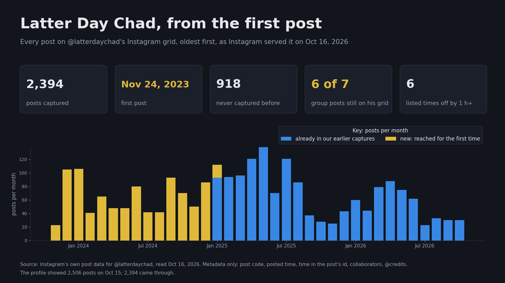

Every post on @latterdaychad's Instagram grid, read back to the first one, so the record holds even if posts disappear. Posts do: one of the seven group posts was deleted this month.

Our earlier captures scrolled down from the newest post and stopped at our scrolling limit, around Jan 8, 2025. This one reached the start: 918 posts we had never seen, from Nov 24, 2023 on. All 1,476 posts we already held are in it.
instagram.com/p/C0CwMWqvJhg · November 24, 2023, 20:59 UTC · no collaborators, no one credited. The first post with a collaborator came on Mar 17, 2024.
The seven posts of Who went first credit Latter Day Chad and Ballard together. Six are on his grid today, with the same codes and times to the second. The seventh is gone.
| post | posted | on Oct 16 |
|---|---|---|
| B1 | Feb 18, 2026 | on his grid |
| B2 | Feb 20, 2026 | on his grid |
| B3 | Feb 22, 2026 | on his grid |
| B4 | Feb 25, 2026 | on his grid |
| B5 | Mar 30, 2026 | on his grid |
| B6 | Apr 10, 2026 | on his grid |
| B7 | Apr 18, 2026 | gone (deleted between Oct 5 and Oct 11) |
1,227 of the 2,394 posts list at least one collaborator, 152 accounts in all. 195 captions credit an account with @. The ten most frequent collaborators:
| account | posts |
|---|---|
| imchristopherlee | 211 |
| elderhasbik | 185 |
| thegoldbible | 175 |
| transcendental_mormon_mystic | 162 |
| faithfulmemeslds | 160 |
| thelatterdayreformer | 145 |
| dr.milo.phd | 135 |
| bruthagee | 122 |
| redeemedrecoveredrestored | 100 |
| truthismytribe | 88 |
Every Instagram post id has its creation time built in, set by Instagram's servers. For 2,388 posts it agrees with the listed time to within an hour, usually to the second. For these 6 it doesn't. We list them without drawing a conclusion.
| post | listed time (UTC) | time in the id | difference |
|---|---|---|---|
| DAFYmyLRQiG | 2024-09-19 04:48 | 2024-09-19 03:45 | +1.0 h |
| DKTpi5rN5NT | 2025-05-31 07:13 | 2025-05-31 05:57 | +1.3 h |
| DLyEZFcPNwn | 2025-07-06 20:04 | 2025-07-06 22:00 | -1.9 h |
| DYm-iMHBX3V | 2026-05-21 14:43 | 2026-05-21 17:25 | -2.7 h |
| DatzZmyjBEf | 2026-07-12 15:36 | 2026-07-13 02:05 | -10.5 h |
| Da6CuX0jCxb | 2026-07-17 16:59 | 2026-07-17 20:10 | -3.2 h |
A logged-in browser opened the profile and replayed Instagram's own request for the next page of posts, one page of twelve at a time, back to the first post, with pauses between pages. For each post we kept only the post code, the listed time, the time in the post id, the collaborators Instagram lists, and the accounts its caption credits with @. Nothing else, and no pictures or video. The profile showed 2,506 posts on October 15; 2,394 came through. The rest may be posts kept off the grid; we have not checked.